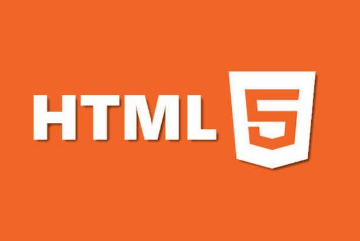
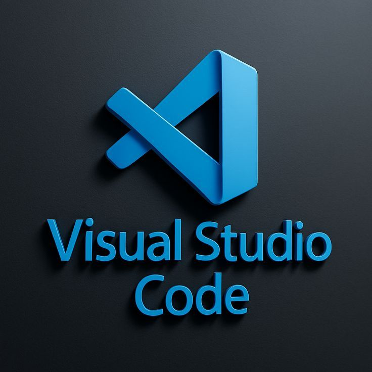

Introduction
I am a focused learner building responsive and scalable web applications, continuously improving my skills in modern web technologies.
About Me
I am a Software Engineering student, focused and disciplined learner who values clarity, structure, and continuous improvement. I approach development with curiosity and a strong desire to understand how systems work internally. I enjoy solving problems and transforming ideas into functional web applications.
Education
I am currently pursuing a degree in Software Engineering, where I am building a strong foundation in programming, data structures, algorithms, and system design. My academic training strengthens my analytical thinking and helps me understand the principles behind scalable and maintainable software systems.
Focus & Skills
My primary focus is full-stack web development, working with both frontend and backend technologies. I enjoy building responsive user interfaces and developing efficient server-side logic while ensuring clean, structured, and maintainable code.
Carrier Goals
My goal is to grow into a competent full-stack developer capable of building complete, production-ready web applications. I aim to continuously improve my technical skills and contribute to projects that solve real-world problems in a practical and scalable way.
Learning Approach
I am a disciplined and growth-oriented learner who values continuous improvement. Through consistent practice and hands-on projects, I strive to deepen my understanding and refine my problem-solving abilities with every stage of development.
Skills
Technical Skills
- 


Tools


- 
Soft Skills
- Problem-Solving
- Analytical Thinking
- Continuous Learning
Projects
Fun Logic Challenge
An interactive web-based logic challenge that tests reasoning skills through multiple-choice questions with real-time feedback and score calculation. The project focuses on clean UI design, structured logic implementation, and dynamic user interaction using JavaScript.
Tech: HTML5, CSS3, JavaScript
Budget Decision Tool
A decision-support web application that evaluates whether a purchase fits within a user's budget and savings using conditional logic and input validation. This project demonstrates logical condition handling, real-time input processing, and structured data management in JavaScript.
Tech: HTML5, CSS3, JavaScript
Contact
If you would like to collaborate or discuss opportunities, feel free to reach out.
Email: ermiyas.getachew509@email.com
LinkedIn: https://www.linkedin.com/in/ermiyas-getachew
GitHub: https://github.com/Lantern-7